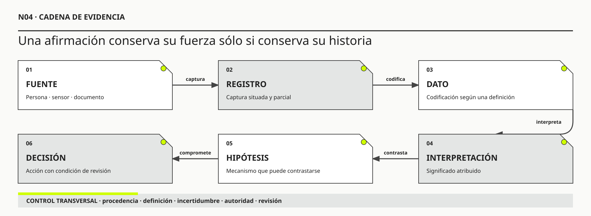

01
01Judea Pearl
OBRA PRINCIPAL UTILIZADAThe Book of Why: The New Science of Cause and EffectBasic Books, 2018 · con Dana Mackenzie

Intervenir exige conservar la historia de cada afirmación: qué se observó, cómo se transformó y qué decisión sostiene.
Hechos, síntomas, relatos, hipótesis y decisiones
Ruta de lectura: problema, distinciones, decisiones, prueba, transferencia y preparación para N05.

Nota. SIN NUM. identifica los aparatos de orientación y referencia que no integran la secuencia argumental.
Seis voces principales para ampliar, contrastar y discutir esta lectura.
01Basic Books, 2018 · con Dana Mackenzie
 02
02International Standard, 2008
 03
03Journal of Management Information Systems, 1996 · con Diane M. Strong
 04
04Basic Books, 1983
 05
05NIST AI 100-1, 2023
 06
06NIST AI 600-1, 2024
N04 no resume estas fuentes ni las convierte en una receta. Las pone en tensión para construir juicio profesional.
¿Cómo evitar que una afirmación convincente, una métrica precisa o una respuesta generada se conviertan prematuramente en “la verdad” del proyecto?

Una cifra no habla sola: adquiere sentido cuando puede reconstruirse la cadena que la convierte en decisión.
El tablero de Hotel Horizonte muestra una cifra inquietante: doce por ciento de los check-ins fueron demorados durante el último mes. Elena Acosta, directora general, la incluye en un correo junto con una conclusión: “El PMS quedó viejo y Recepción pierde demasiado tiempo”. La reunión comienza con una métrica, un diagnóstico y una solución casi unidos. Si el sistema es la causa, reemplazarlo parece la respuesta profesional.
Lucía Ferreyra recuerda algo distinto. Durante el turno de mayor ocupación, muchas demoras comenzaron antes de que Recepción abriera el PMS. Faltaba una garantía, la reserva traía un nombre diferente o la habitación prometida no podía asignarse. Federico Müller revisa registros técnicos y encuentra operaciones lentas, aunque no en todos los casos señalados por el tablero. Ricardo Sosa sostiene que el problema central es la coordinación entre áreas. Las tres versiones pueden contener evidencia y ninguna alcanza todavía para decidir.
El equipo pide entonces el detalle del indicador. “Demorado” significa que transcurrieron más de ocho minutos entre la apertura de la reserva y la entrega de la llave. La definición excluye la fila anterior, las consultas que se realizan antes de abrir el registro y los casos que abandonan el proceso. También mezcla llegadas simples, grupos, reservas con pago pendiente y habitaciones cuya condición física debe verificarse. El doce por ciento es un dato real producido por una regla. No es una descripción completa de la demora ni una prueba de su causa.
Para entender la cadena, se reconstruye el episodio HH-04. A las 18:43 una huésped se acerca al mostrador con una reserva confirmada. Lucía observa que el apellido del documento no coincide exactamente con el de la reserva. La huésped explica que la compra fue realizada por su empresa y muestra el correo. Antes de abrir el PMS, Lucía consulta una nota del turno anterior y llama a Reservas. Esa espera no entra en el indicador. Cuando finalmente abre el registro, el sistema tarda nueve segundos en responder. El tablero conservará esos nueve segundos y omitirá los cuatro minutos anteriores.
A las 18:48 aparece otra dificultad. Housekeeping registró la habitación como limpia, pero Mantenimiento conserva un bloqueo por una cerradura intermitente. Lucía busca una alternativa, obtiene autorización para cambiar de categoría y entrega otra llave a las 18:55. El indicador clasifica el caso como demorado. La clasificación es correcta según su definición. Sin embargo, “el PMS demoró el check-in” ya es una interpretación causal que el registro no sostiene por sí solo.
Elena no inventó la urgencia. La espera existe, los reclamos aumentaron y algunas pantallas responden lentamente. Lucía tampoco posee toda la explicación por estar cerca del trabajo. Puede recordar mejor los episodios difíciles, atribuir al canal comercial una contradicción técnica o naturalizar tareas evitables. Los logs de Federico tienen otra limitación: describen eventos dentro de componentes, no necesariamente el tiempo vivido por la huésped ni la decisión que reparó la promesa. Cada fuente observa una parte y produce un tipo de rastro diferente.
Una analista utiliza una herramienta generativa para resumir entrevistas, tickets y notas. La salida afirma: “La principal causa de demora es la fragmentación entre sistemas”. La frase es clara, coincide con parte de los relatos y podría ser útil como hipótesis. Pero la herramienta no observó el hotel. Transformó materiales seleccionados, con una instrucción y un modelo determinados. Si el resumen pierde casos contradictorios, mezcla períodos o inventa una relación, su fluidez no le concede un estatus especial.
El equipo cambia entonces la unidad de trabajo. En lugar de discutir si el correo, el tablero, la experiencia de Lucía o el resumen automático dicen “la verdad”, escribe afirmaciones más acotadas. “En HH-04 hubo cuatro minutos de coordinación antes de abrir el PMS” es una reconstrucción del episodio. “La respuesta del PMS tardó nueve segundos” proviene de un registro técnico. “La incompatibilidad entre identidad, estado de habitación y autoridad contribuyó a la espera” es una hipótesis de mecanismo. “Conviene reemplazar la plataforma” es una recomendación que requiere comparar alternativas y consecuencias.
La distinción no paraliza. Permite decidir una investigación breve: reconstruir episodios completos, preservar procedencia, comparar explicaciones rivales y declarar qué resultado obligaría a revisar cada una. Si la latencia técnica domina aun cuando se controlan significado, garantía y estado físico, la intervención sobre el PMS gana prioridad. Si la demora nace antes o después de la operación técnica, cambiar la aplicación puede ser necesario y seguir siendo insuficiente.
HH-04 acompañará la lectura para mostrar tres movimientos. Primero se desarma una afirmación y se conserva el rastro que la sostiene. Después se construyen y contrastan explicaciones. Finalmente se decide con evidencia incompleta y se fija una condición de revisión. N04 no enseña a desconfiar de todo. Enseña a impedir que una frase convincente, una cifra precisa o una salida fluida adquieran más autoridad que la cadena que permite justificarlas.
Intervenir exige conservar el estatus epistemológico de cada afirmación: qué fue observado, quién lo relató, cómo se midió, qué se infiere, qué se supone y qué se decidió. La evidencia no habla sin interpretación, pero no todas las interpretaciones tienen el mismo sustento. La trazabilidad epistemológica permite cuestionar, triangular y revisar sin borrar incertidumbre ni paralizar la acción.
N03 convirtió la frontera en una hipótesis y mostró que un efecto puede regresar como causa, carga o daño. Para revisar ese mapa se necesitan afirmaciones capaces de conservar su historia. N04 recibe relaciones provisionales, señales y explicaciones rivales; enseña a preguntar qué rastro sostiene cada una, qué inferencia las conecta y qué decisión puede tomarse sin atribuirles una certeza que no poseen.
El límite con N05 también debe ser explícito. N04 reconoce que la posición de una fuente influye sobre lo que puede observarse y sobre la credibilidad que recibe. N05 desarrollará quién define el problema, quién tiene voz, quién controla recursos y quién soporta consecuencias. Aquí esas relaciones sólo se introducen cuando cambian la calidad o la posibilidad de cuestionar una afirmación.

Ingeniería de Software aportó trazabilidad entre necesidades, requisitos, código y pruebas. N04 extiende esa cadena hacia atrás: antes del requisito debe poder reconstruirse qué observación, relato o inferencia lo sostiene. Un requisito puede ser verificable y estar fundado en una afirmación débil; una prueba puede pasar y validar una regla cuya justificación ya cambió.
Ese desplazamiento hacia atrás es decisivo. Una prueba automatizada responde si una implementación satisface un comportamiento especificado. No responde por sí sola si el comportamiento especificado representa una necesidad vigente, si la necesidad fue formulada a partir de una muestra sesgada o si el resultado local mejora la promesa completa del servicio. Podemos construir correctamente la solución equivocada, medir con precisión el fenómeno equivocado y automatizar con gran eficiencia una decisión que nadie volvió a justificar.
N04 no reemplaza el rigor de construcción. Agrega un rigor anterior y otro posterior. Antes de construir pregunta de dónde proviene la afirmación que orienta el diseño. Después de observar resultados pregunta qué aprendimos y qué decisión debe revisarse. El objeto de trabajo ya no es sólo el requisito o la función: es la relación defendible entre una afirmación, la evidencia disponible, el razonamiento que las conecta y la decisión que se toma.
La evidencia no es una cosa que se acumula en una carpeta. Es una relación: algo cuenta como evidencia para una afirmación, dentro de una pregunta y con consecuencias sobre una decisión. Un log no es evidencia en abstracto. Puede ser evidencia de que una solicitud llegó a un servidor, pero no necesariamente de que una persona recibió el servicio, comprendió la respuesta o pudo continuar su tarea. Una entrevista puede ser evidencia de cómo alguien interpreta una situación, pero no demuestra por sí sola la frecuencia del fenómeno ni su causa dominante.
Por eso conviene trabajar con una unidad mínima compuesta por cinco elementos:
Si falta el primer elemento, acumulamos datos sin pregunta. Si falta el segundo, opinamos. Si falta el tercero, saltamos del registro a una conclusión. Si falta el cuarto, buscamos confirmación. Si falta el quinto, investigamos sin criterio de suficiencia. La calidad metodológica aparece cuando los cinco pueden reconstruirse y discutirse.
Ejemplo breve: error 500. Tres respuestas HTTP 500 sostienen que tres solicitudes terminaron con un error del servidor. No sostienen todavía que “la API es inestable”, que esos errores explican la demora del huésped o que cambiar de proveedor sea la mejor decisión. Para avanzar hacen falta población total, distribución temporal, reintentos, impacto en la tarea, rutas alternativas y explicaciones rivales.
En una discusión técnica solemos presentar evidencia como volumen: “tenemos treinta entrevistas”, “el tablero contiene un millón de filas”, “la IA analizó todos los comentarios”. La cantidad puede mejorar cobertura, pero no construye el argumento. Un argumento profesional necesita mostrar cómo se pasa de un rastro a una conclusión.
Podemos descomponerlo de manera sencilla:
El calificador no debilita el argumento: impide que prometa más de lo que la evidencia sostiene. La refutación tampoco es un gesto académico decorativo. Explicita qué observación podría cambiar la interpretación. Cuando un equipo no puede decir qué evidencia lo haría abandonar una hipótesis, probablemente no está investigando: está defendiendo una preferencia.
Esta estructura adapta el modelo de argumentación de Stephen Toulmin. Los datos no llegan solos a una conclusión: una garantía o regla de conexión explica el paso, un respaldo sostiene esa regla, un calificador limita el alcance y una posible refutación declara dónde podría fallar. En N04 no se utiliza como formulario retórico, sino como control de trazabilidad entre lo observado y lo que se recomienda.
Ejemplo breve: encuesta. “El 82 % prefiere autoservicio” parece concluyente. El argumento cambia si la encuesta se mostró únicamente a usuarios de la aplicación, si “preferir” significa evitar una fila excepcional o si quienes necesitaron asistencia abandonaron antes de responder. El porcentaje no desaparece; cambia su alcance.
En Hotel Horizonte circulan tres frases:
Las tres pueden aparecer en una reunión como hechos. Sin embargo, tienen estructuras diferentes.
“El PMS es lento” es un relato evaluativo. Puede referirse a latencia de pantalla, cantidad de pasos, tiempo total de una tarea, espera por otro dato o frustración en situaciones excepcionales. Para convertirlo en evidencia accionable se necesitan episodio, operación, contexto, comparación y medida.
“Las OTAs se llevan el margen” combina observación económica, interpretación causal y posición política. Las comisiones tienen costo; los canales también pueden producir demanda, visibilidad y riesgo. La decisión no se deduce de comparar un porcentaje aislado.
“La IA mejorará la experiencia” es una hipótesis extremadamente amplia o un deseo. No define función, población, error, alternativa ni resultado. Presentarla como inevitabilidad tecnológica evita la obligación de probarla.
El problema no es que las frases sean falsas. Pueden señalar fenómenos reales. El problema es asignarles un grado de certeza y una capacidad de decisión que todavía no poseen.
Registro de algo percibido bajo condiciones específicas. “A las 11:07, la pantalla tardó 8,4 segundos en mostrar la reserva” es una observación si existe instrumento y contexto. No demuestra que siempre ocurra ni que explique la espera total.
La observación está mediada: alguien decide qué medir, con qué herramienta y dónde empieza el reloj. No por eso deja de ser evidencia; exige documentar procedimiento y alcance.
Algo dicho por un actor o documento. “Recepción afirma que el sistema se congela al cobrar” es evidencia de una perspectiva, no prueba directa de la causa. Los testimonios son valiosos para conocer trabajo, significado y episodios, pero deben conservar autor, contexto e incentivos.
Representación codificada producida por un proceso. Un valor de 37 segundos, una categoría “cancelada” o una tasa de ocupación parecen objetivos, pero dependen de definiciones, captura, limpieza y población. El dato es evidencia sobre el proceso que lo generó tanto como sobre el fenómeno.
Manifestación de una situación: espera, queja, error, reapertura, diferencia contable. Un síntoma orienta investigación, pero no identifica causa. El mismo síntoma puede surgir de mecanismos distintos.
Significado atribuido a evidencia. “La demora se concentra en reservas con garantía incompleta” puede ser una interpretación sustentada por episodios y datos. Debe distinguirse del registro original para poder discutirla.
Proposición sobre un mecanismo: “Cuando la garantía llega sin identificador estable, recepción consulta tres fuentes y aumenta la variabilidad”. Es más útil que “el sistema es malo” porque puede buscarse evidencia a favor y en contra.
Afirmación aceptada provisionalmente para actuar sin verificación suficiente. Su legitimidad depende del costo de error, reversibilidad y condición de revisión. Suponer que una API estará disponible puede ser aceptable para un boceto y peligroso para firmar un contrato.
Compromiso de actuar, no conclusión verdadera. “Realizaremos un piloto en un turno” es una decisión fundada en evidencia y supuestos. Puede ser prudente aunque la evidencia sea incompleta. Confundir decisión con hecho impide revisarla.
Condición que limita opciones: fecha legal, presupuesto, contrato, política, capacidad. Algunas son duras; otras son preferencias presentadas como inevitables. La metodología debe verificar su autoridad y posibilidad de negociación.
Supóngase que el tablero informa “tiempo medio de check-in: 4 minutos 12 segundos”. Antes de usarlo conviene preguntar:
Una media precisa puede ocultar una cola severa. Si 80 % tarda dos minutos y 20 % veinte, la experiencia de un grupo se pierde. También puede existir sesgo de selección: solo se mide a quienes completan.
La calidad de datos no se reduce a exactitud. Incluye completitud, actualidad, coherencia, procedencia, representatividad, semántica y adecuación al uso. Un dato puede ser correcto para facturación e insuficiente para reconstruir experiencia.
ISO/IEC 25012 organiza la calidad de datos como un modelo que distingue características inherentes y dependientes del sistema. Wang y Strong muestran, además, que la calidad no puede separarse del uso: un dato debe ser intrínsecamente adecuado, pertinente para la tarea, comprensible en su representación y accesible para quien lo necesita. Ambas referencias impiden reducir el control a preguntar si el valor fue copiado sin errores.
Ejemplo breve: temperatura. Un sensor registra 31 °C. Sin calibración, ubicación y hora no puede determinarse si describe el salón, el equipo o una lectura defectuosa.
Cuando una medición llega a una reunión, suele evaluarse con una sola pregunta: “¿el dato es correcto?”. Esa pregunta mezcla al menos tres problemas.
La confiabilidad se refiere a la estabilidad del procedimiento. Si repetimos la medición en condiciones equivalentes, ¿obtenemos resultados semejantes? Un cronómetro automático que siempre inicia treinta segundos tarde puede ser confiable (repite el mismo patrón) y, sin embargo, producir una medida sesgada. Dos observadores que aplican criterios distintos para decidir cuándo termina un check-in generan baja confiabilidad, aunque ambos trabajen con cuidado.
La validez pregunta si la medida representa realmente el concepto que se pretende estudiar. Contar clics puede ser una medición confiable de actividad y una medida inválida de comprensión. Medir el tiempo que una persona permanece frente al mostrador puede capturar duración, pero no necesariamente fricción: una conversación larga puede resolver una situación compleja y producir una experiencia mejor que un trámite breve e inconcluso.
La utilidad para la decisión agrega contexto. Una medida puede ser válida y confiable, pero no cambiar ninguna opción relevante. Saber con precisión cuántos colores usa la interfaz no ayuda a decidir si el hotel debe reconciliar estados entre Housekeeping y Recepción. En cambio, una muestra pequeña de episodios completos puede ser suficiente para una prueba reversible si revela en qué momento aparece la contradicción.
Estas tres preguntas evitan dos errores opuestos. El primero es rechazar toda evidencia imperfecta. En organizaciones reales casi ninguna medición captura por completo un fenómeno. El segundo es aceptar una cifra porque proviene de un tablero o tiene decimales. Una evidencia limitada puede ser valiosa si su limitación está declarada y la decisión es proporcional.
Ejemplo breve: satisfacción. Hotel Horizonte informa 4,3 sobre 5. La cifra puede ser confiable porque la encuesta se procesa siempre igual. Su validez depende de quién responde, en qué momento y qué entiende por satisfacción. Su utilidad depende de la decisión: quizá no permita elegir un PMS, pero sí localizar segmentos cuya experiencia conviene investigar.
Una diferencia observada puede provenir del fenómeno o del modo de medirlo. Distinguir ambas fuentes es esencial.
El error aleatorio introduce variación sin una dirección estable: una conexión inestable agrega segundos distintos, una persona pulsa tarde el botón de inicio o una muestra pequeña cambia por azar. Puede reducirse con repetición, mejores instrumentos o muestras adecuadas.
El sesgo sistemático empuja la medición en una dirección. Si el cronómetro comienza cuando Recepción abre la reserva y omite la cola anterior, el proceso parecerá más corto de lo que vive el huésped. Si la encuesta se envía solo a quienes completaron el check-in digital, quienes abandonaron quedan fuera. Aumentar la cantidad de registros no corrige necesariamente el sesgo; puede volver más precisa una descripción equivocada.
La variación real no debe tratarse automáticamente como ruido. Los check-ins pueden ser genuinamente distintos según garantía, idioma, canal, accesibilidad, grupo, horario o estado de la habitación. Promediarlos borra mecanismos. Antes de “limpiar” excepciones conviene preguntar si esas excepciones son justamente el trabajo que el sistema debe sostener.
Para estudiantes de Ingeniería de Software, una analogía útil es la prueba automatizada. Una prueba puede ejecutarse de forma perfectamente repetible y verificar el comportamiento equivocado porque el oráculo está mal definido. Del mismo modo, una métrica puede actualizarse cada minuto y medir una abstracción que ya no representa la operación.
Ejemplo breve: resolución del chatbot. Si “resuelto” significa que la conversación se cerró sin derivación, el indicador puede subir cuando el usuario abandona. El dato describe fielmente el evento técnico y confunde ese evento con la resolución del problema.
Conviene imaginar una secuencia de trabajo: fuente, registro, dato, interpretación, hipótesis y decisión. No es una escalera en la que cada peldaño sea “más verdadero”. Es una cadena en la que cada transformación responde una pregunta distinta y debe conservar su vínculo con la anterior.
La fuente puede ser una persona, un sensor, un contrato o un sistema. El registro conserva algo producido por esa fuente. El dato lo codifica según una definición. La interpretación le atribuye significado. La hipótesis lo conecta con un mecanismo posible. La decisión compromete una acción. El error aparece cuando una etapa se presenta como si fuera otra: un testimonio se vuelve causa, una correlación se vuelve mecanismo o una decisión aprobada se vuelve verdad técnica.
Cada enlace necesita un control sencillo:
La trazabilidad no exige conservar todo indefinidamente. Exige conservar lo que permite reconstruir afirmaciones importantes y revisar decisiones. Para un boceto de baja consecuencia puede alcanzar una nota breve. Para una automatización que afecta reservas, pagos o derechos, la cadena necesita mayor detalle, acceso controlado y responsables explícitos.
Ejemplo breve: “la API falla”. El log muestra respuestas 500 en tres solicitudes. El registro sostiene que esas llamadas fallaron. No demuestra todavía que la API sea la causa dominante de las demoras, que el proveedor incumpla su contrato o que reemplazar la plataforma sea la mejor decisión.
Conviene medir la distancia entre lo observado y lo que se pretende concluir. “Tres solicitudes devolvieron 500” está cerca del registro. “La API es inestable” agrega una generalización sobre una población y un período. “La API explica la demora del check-in” agrega una relación causal con una experiencia completa. “Debe cambiarse de proveedor” agrega todavía una evaluación de alternativas, costos y riesgos. Cada frase puede llegar a ser defendible, pero necesita evidencia distinta. El error no consiste en avanzar por esa cadena; consiste en saltar escalones sin declarar el salto.
Una práctica sencilla es reescribir cada conclusión con un verbo que revele su estatus. Observamos tres errores. Estimamos una tasa para el período. Inferimos que una cola contribuye a la demora. Suponemos que el proveedor controla el mecanismo. Recomendamos una prueba de reconciliación. Los verbos no son maquillaje lingüístico: permiten que otra persona identifique dónde cuestionar el argumento y qué evidencia adicional tendría valor.
También ayudan a evitar el error inverso: exigir observación directa para todo. En sistemas organizacionales muchas propiedades importantes no se ven en una pantalla. La autoridad, la confianza, la capacidad de reparar o la coherencia de una promesa se infieren a partir de episodios, decisiones y consecuencias. Que sean inferidas no las vuelve imaginarias. Obliga a explicar mejor el puente entre los rastros y la afirmación.
La afirmación inicial, “el PMS es la causa de la demora”, puede desarmarse sin perder el problema que Elena intenta señalar. En HH-04 se observaron una discrepancia de identidad, una consulta previa, nueve segundos de respuesta, un bloqueo de Mantenimiento, una reasignación y doce minutos hasta la entrega. El tablero codificó el caso como demorado. Lucía interpretó que la coordinación fue dominante. Federico detectó latencia. Dirección recomendó evaluar una sustitución.
Cada elemento ocupa un lugar distinto. El episodio documenta una secuencia; el registro técnico mide una operación; el indicador aplica una definición a una población; las explicaciones conectan rastros con mecanismos; la recomendación compara alternativas y compromete recursos. Mantener esas diferencias permite discutir una parte sin descartar las otras. Corregir el reloj del tablero no refuta la experiencia de Lucía. Reconocer coordinación no elimina la latencia. Detectar un componente lento no demuestra que reemplazarlo produzca el resultado esperado.
El primer producto de N04 no es una conclusión, sino una cadena trazable: fuente → registro → dato → interpretación → hipótesis → decisión. Cuanto más lejos se encuentra una afirmación del rastro original, más explícito debe ser el puente que la sostiene. Esta regla prepara el segundo movimiento, donde las explicaciones se contrastan en lugar de acumularse.
La procedencia permite reconstruir de dónde viene un dato y qué transformaciones sufrió. Para una métrica importante conviene conocer:
Sin procedencia, dos tableros pueden mostrar ocupación distinta y la discusión convertirse en autoridad personal. Con procedencia se descubre que uno calcula habitaciones vendidas y otro habitaciones físicamente ocupadas, o que usan cortes horarios diferentes.
La procedencia también importa en IA. Una respuesta fluida puede combinar documentos desactualizados, instrucciones y generación. La cita no garantiza que la afirmación esté contenida en la fuente. Debe verificarse relación, versión y aplicabilidad.
Triangular no significa acumular tres fuentes que dicen lo mismo. Significa combinar perspectivas o métodos con errores distintos.
Para investigar demora de check-in:
Si todas convergen, aumenta confianza. Si contradicen, la contradicción es un dato valioso. Quizá el procedimiento formal no describe la práctica, el log mide solo una parte o los actores usan términos diferentes.
La triangulación debe ser proporcional. Una decisión reversible y local puede apoyarse en pocas observaciones. Una automatización de alto impacto necesita evidencia más amplia, representativa y adversarial.
Los proyectos suelen saltar de una asociación a una intervención. Los huéspedes que usan check-in digital reportan mayor satisfacción; por lo tanto, se concluye que digitalizar mejora satisfacción. Quizá quienes eligen el canal tienen casos simples, llegan en horarios menos congestionados o son clientes frecuentes.
Para sostener causalidad conviene preguntar:
No toda decisión requiere prueba causal perfecta. Pero debe declarar la fuerza de inferencia. “La asociación justifica investigar” no equivale a “la intervención causará el resultado”.
El trabajo causal puede apoyarse en la distinción de Judea Pearl entre observar asociaciones e intervenir sobre un mecanismo. Una correlación ayuda a localizar una regularidad; una decisión de cambio requiere justificar qué relación se espera modificar y por qué. N04 no exige identificar causalidad perfecta antes de actuar, pero sí evita que una asociación estadística se presente como efecto de una intervención todavía no realizada.
Si no hay reclamos de accesibilidad, ¿significa que el servicio es accesible? Puede significar que las personas no intentan reservar, abandonan antes o usan otros canales. La falta de registro puede ser consecuencia de la barrera.
Si no hay incidentes reportados, quizá el sistema sea seguro o quizá el reporte sea difícil y punitivo. Si un modelo no registra anulaciones humanas, no puede concluirse que las recomendaciones se siguen; quizá la acción ocurre fuera.
Esta distinción es crucial al evaluar grupos con baja voz. Los sistemas observan mejor a quienes logran ingresar y completar. Quienes quedan afuera aparecen como ausencia.
Ejemplo breve: abandono. El tablero dice que una estudiante abandonó porque no ingresó durante veinte días. Puede estar cursando presencialmente o tener un problema de acceso; el dato necesita contexto.
Todo proyecto actúa con supuestos. El objetivo no es fingir que pueden eliminarse, sino hacerlos visibles y proporcionales.
Un registro útil incluye:
Los supuestos pueden clasificarse por criticidad e incertidumbre. Uno de alto impacto y baja evidencia merece investigación temprana. Uno de bajo impacto y fácil reversión puede aceptarse.
En Hotel Horizonte, “las OTAs ofrecen API de disponibilidad con la frecuencia necesaria” podría condicionar arquitectura. “La mayoría de huéspedes tiene smartphone” condiciona canal y equidad. “Housekeeping puede actualizar en tiempo real” condiciona operación y trabajo. No son detalles técnicos: sostienen la promesa.
Esperar certeza total también produce costo. La pregunta profesional es qué evidencia es suficiente para una decisión específica.
La suficiencia depende de:
Puede ser razonable probar un mensaje informativo con una cohorte pequeña y retirada inmediata. No es razonable permitir que un agente cancele reservas con identidad ambigua basándose en una demostración.
La decisión debe contener condiciones: “se avanzará en modo sombra durante cuatro semanas si se preserva el flujo actual; la herramienta no ejecutará acciones; se medirán errores por tipo y población; la prueba se detendrá ante exposición de datos o una recomendación peligrosa”. Así, la incertidumbre se convierte en diseño.
Una métrica es una representación construida para orientar una pregunta. No debe confundirse con el objetivo ni con la realidad completa.
Una buena métrica declara:
“Contactos evitados” puede incentivar ocultar ayuda. “Resolución en primer contacto” puede cerrar prematuramente. “Exactitud del modelo” puede ocultar severidad y desigualdad. “Velocidad del equipo” puede convertirse en presión para dividir trabajo artificialmente.
La métrica es útil cuando forma parte de un argumento, no cuando reemplaza el juicio.
Los sistemas generativos producen texto plausible, clasificaciones, resúmenes y propuestas. Pueden ayudar a explorar, pero agregan riesgos epistemológicos:
Una práctica mínima exige registrar propósito, entrada relevante, salida usada, verificación, cambios y decisión humana. Si la IA propone causas de demora, esas causas son hipótesis. Si resume entrevistas, debe contrastarse con originales. Si genera un modelo, el estudiante o profesional debe explicar su semántica y límites.
La IA puede también apoyar crítica: buscar contraejemplos, proponer preguntas adversariales o detectar contradicciones. Su valor depende de que no se convierta en autoridad invisible.
Ejemplo breve: reseñas. Cien comentarios repiten una queja porque una publicación viral los coordinó. El volumen es una señal importante, no cien observaciones independientes.
Algunas afirmaciones dependen de reglas sociales y sistemas de registro. Una reserva está “confirmada” porque una autoridad y un conjunto de procedimientos reconocen ese estado. Un pago está “aprobado” según la respuesta de una pasarela, aunque pueda ser revertido. Una habitación está “lista” cuando alguien con autoridad aplica criterios definidos.
Decir que estos hechos se construyen no significa que sean arbitrarios. Significa que su verdad depende de definiciones, eventos y autoridad. Dos áreas pueden producir hechos institucionales incompatibles porque aplican reglas diferentes. La solución no es elegir la base “más verdadera” en abstracto, sino decidir qué afirmación necesita cada acción y quién puede sostenerla.
Esta distinción evita dos extremos. El realismo ingenuo trata los estados del sistema como reflejo directo del mundo. El relativismo supone que todas las versiones valen igual. En cambio, se evalúa cada afirmación por evidencia, autoridad, temporalidad y propósito.
Una decisión no se convierte en hecho por haber sido aprobada. Debe registrarse como elección situada: qué se decidió, con qué evidencia, qué alternativas existían, qué supuestos se aceptaron, quién tenía autoridad y qué condición obliga a revisar.
Este registro evita la reconstrucción retrospectiva. Cuando el resultado es bueno, las organizaciones tienden a imaginar que era previsible; cuando es malo, a presentar la decisión como error obvio. Conservar el contexto permite aprender sobre la calidad del razonamiento, no solo juzgar por el resultado.
Una buena decisión puede producir un resultado adverso bajo incertidumbre. Una mala decisión puede beneficiarse por azar. Evaluar metodología exige separar proceso y resultado sin desconectarlos: el resultado aporta evidencia para actualizar, pero no reescribe lo que era razonable saber.
Donald Schön permite comprender esta práctica como reflexión en la acción y sobre la acción. Quien interviene no aplica una receta desde afuera: conversa con una situación que responde, sorprende y obliga a reformular. El registro de decisiones conserva esa conversación para que una sorpresa posterior no se convierta en olvido ni en una justificación retrospectiva.
Las condiciones de revisión deben ser observables. “Revisar si cambia el contexto” es débil. “Revisar si la tasa de contradicción supera un umbral, si aparece un grupo afectado no representado o si el proveedor modifica su contrato” permite actuar.
La forma de comunicar debe reflejar la fuerza de la evidencia. “Observamos”, “dos actores informaron”, “los registros sugieren”, “inferimos provisionalmente” y “decidimos asumir” no son variaciones estilísticas: expresan estatutos distintos. El lenguaje categórico puede convertir una hipótesis útil en una falsa certeza.
Asignar un nivel de confianza ayuda solo si se explica. “Alta” puede significar fuentes independientes, mecanismo consistente y ausencia de evidencia adversa relevante. No debería reducirse a un porcentaje inventado. En decisiones complejas conviene registrar confianza por afirmación, no una confianza global del proyecto.
La incertidumbre comunicada no debe paralizar. Un profesional puede recomendar una acción aun con evidencia incompleta si declara alcance, riesgo y reversibilidad: “con evidencia moderada sobre este mecanismo, proponemos una prueba limitada porque el daño es acotado y la señal aparecerá pronto”. Esa formulación es más rigurosa que afirmar certeza o evitar decidir.
Comunicar de este modo protege la discusión. Permite que otra persona cuestione fuente, inferencia o valor sin mezclar todo. También facilita actualizar: cuando llega evidencia nueva se modifica la afirmación correspondiente, no se reescribe retrospectivamente la historia.
Ejemplo breve: resumen automático. Una IA resume una entrevista y elimina vacilaciones que indicaban incertidumbre. El texto queda más claro y pierde evidencia sobre el grado de confianza.
Una hipótesis es valiosa porque organiza una búsqueda, no porque permita sentir que el problema ya fue comprendido. El riesgo aparece cuando el equipo la convierte en identidad: “el PMS es la causa que descubrimos”. Desde ese momento, una evidencia favorable parece importante y una evidencia adversa parece una excepción. La investigación deja de reducir incertidumbre y comienza a proteger una historia.
Una manera práctica de evitarlo es comparar hipótesis rivales antes de recolectar nueva evidencia. Para la demora de check-in pueden proponerse:
El objetivo no es elegir una hipótesis por votación. Es anticipar qué observación sería más probable bajo cada una. Si la latencia ocurre también en casos simples y coincide con picos de respuesta del servidor, H1 gana fuerza. Si el tiempo técnico es bajo pero aparecen consultas y esperas entre áreas, H2 o H4 resultan más plausibles. Si los episodios comienzan antes de la llegada por una condición vendida, H3 merece atención.
Esta lógica se parece a una actualización bayesiana sin exigir cálculo avanzado. Se parte de plausibilidades iniciales (basadas en conocimiento previo, no en capricho) y se las modifica cuando llega evidencia. Una observación no “prueba” una hipótesis de manera aislada; cambia cuánto conviene creer en ella frente a sus rivales. La evidencia más informativa no siempre es la más abundante, sino la que discrimina mejor entre explicaciones.
Charles S. Peirce denominó abducción al razonamiento que propone una explicación posible frente a un hecho sorprendente. La abducción abre una investigación: no prueba la explicación que imagina. En HH-04, la latencia, la incompatibilidad semántica y la promesa comercial son conjeturas que ganan o pierden plausibilidad cuando se deducen consecuencias observables y se las contrasta con episodios.
Ejemplo breve: reinicio exitoso. Reiniciar el PMS elimina una demora. H1 se fortalece, pero no queda demostrada: el reinicio también pudo limpiar una cola creada por mensajes incompatibles. Para discriminar hacen falta registros de estado, no otra repetición del relato “reiniciar funciona”.
La actualización rigurosa requiere registrar también la evidencia adversa. Si tres reinicios mejoran el tiempo y dos no producen ningún cambio, los dos casos negativos no son “ruido” que conviene descartar: pueden señalar condiciones diferentes. Tal vez el reinicio ayude sólo cuando existe una cola técnica y sea irrelevante cuando el cuello de botella es una autorización. Separar poblaciones puede producir una explicación más precisa que seguir buscando una causa única.
En términos operativos, una hipótesis útil debe venir acompañada por una prueba discriminante: una observación cuyo resultado sea esperable bajo una explicación y menos esperable bajo otra. Si H1 predice que el estado correcto aparece primero en Housekeeping y llega tarde al PMS, mientras H2 predice que ambos sistemas muestran valores distintos aun en el mismo instante, comparar secuencias y significados enseña más que acumular nuevas opiniones sobre “lentitud”. La pregunta deja de ser quién tiene razón y pasa a ser qué observación separa mejor las explicaciones.
El equipo debe acordar por anticipado qué resultado lo obligaría a revisar su hipótesis. Esa condición protege contra una tentación frecuente: reinterpretar cualquier hallazgo como confirmación. Cuando toda evidencia favorece la misma historia, la historia dejó de ser una hipótesis contrastable y se convirtió en una preferencia protegida.
Los conjuntos de datos no sólo contienen valores: contienen ausencias. Y las ausencias tienen mecanismos. Un campo puede faltar porque una persona olvidó completarlo, porque el evento no aplica, porque el sistema no permite registrarlo, porque el caso fue abandonado o porque alguien evita dejar trazabilidad. Tratar todos los vacíos como iguales fabrica una población ficticia.
Conviene distinguir tres situaciones intuitivas. A veces un dato falta casi por azar: se perdió un paquete sin relación con el tipo de huésped. A veces falta por una variable conocida: las reservas de cierto canal no envían un identificador. Y a veces falta precisamente por el fenómeno que se pretende estudiar: quienes encuentran más fricción abandonan antes de responder la encuesta. En este último caso, analizar sólo registros completos puede invertir la conclusión.
La selección también ocurre antes de medir. Si se observa únicamente el turno mañana porque es más accesible, no se conoce el sistema general. Si se entrevista a quienes aceptaron el cambio, no se conoce la resistencia. Si se evalúa el chatbot con preguntas frecuentes, no se conoce cómo trata excepciones, ambigüedad o solicitudes que modifican derechos y dinero.
Ejemplo breve: satisfacción alta. El hotel recibe pocas respuestas de huéspedes que tuvieron una sobreventa porque la encuesta se envía después de completar la estadía. La ausencia no es ruido: el diseño de captura excluye parte del daño.
La evidencia también tiene una dimensión organizacional. No todas las voces reciben el mismo crédito. Un tablero ejecutivo puede ser aceptado sin preguntas porque parece técnico; una advertencia de Recepción puede llamarse “anécdota” aunque provenga de cientos de interacciones; una persona huésped puede quedar reducida a un puntaje; un proveedor puede definir qué logs entrega y, con ello, qué causas resultan visibles.
Esto no implica que todas las afirmaciones valgan igual. Implica que la evaluación debe depender de pertinencia, procedencia y contraste, no sólo de jerarquía. Quien está cerca del trabajo puede observar excepciones que una métrica agregada borra. Quien administra datos puede detectar limitaciones que el usuario no ve. Quien asume riesgo contractual puede aportar restricciones reales. Ninguna posición posee por sí sola la descripción completa.
Un diseño metodológico responsable pregunta:
En sistemas con IA esta cuestión es central. Una clasificación puede convertir un relato ambiguo en una categoría operativa y luego usarla como evidencia. N04 exige conservar quién produjo el relato, qué transformación creó la categoría y cómo puede corregirse el registro. La distribución más amplia de poder, voz, participación y reparación queda abierta para N05.

La evidencia más valiosa no confirma una historia: permite distinguir entre explicaciones rivales.
Para trabajar sin burocracia puede utilizarse un Registro Afirmación, Evidencia y Decisión (AED). No es una plantilla universal; es una disciplina de razonamiento. Cada registro importante debería contener:
Veamos una versión compacta. Afirmación: “En llegadas con garantía incompleta, la demora dominante se produce antes de abrir el PMS”. Estatus: hipótesis. Rastros: doce episodios, observación de dos turnos y eventos de pago. Puente: la secuencia muestra consultas externas previas a la operación técnica. Limitación: no incluye grupos ni turno nocturno. Rival: el estado de habitación podría concentrarse en los mismos casos. Confianza: moderada. Decisión: no priorizar reemplazo del PMS antes de aislar el mecanismo. Próxima evidencia: comparar episodios equivalentes con garantía completa e incompleta. Revisión: si el tiempo técnico supera la espera externa en la muestra ampliada, reabrir H1.
El registro obliga a separar lo que se sabe de lo que se hace. Puede haber evidencia moderada y una decisión firme si la urgencia es alta; puede haber evidencia fuerte y ninguna intervención inmediata si el costo o la autoridad no lo permiten. La decisión incorpora valores, restricciones y riesgo. La evidencia la informa, pero no la reemplaza.
“Necesitamos más datos” puede ser prudencia o evasión. Nunca tendremos una descripción total del sistema. La suficiencia depende de la decisión: daño posible, reversibilidad, costo de aprender tarde y diversidad de personas afectadas.
Para una prueba local y reversible puede alcanzar una muestra pequeña si el mecanismo es visible, la señal aparece rápido y existe capacidad de detener. Para cambiar un contrato, migrar datos históricos o automatizar una decisión que afecta derechos, se necesita evidencia más diversa, controles independientes, escenarios adversos y autoridad explícita.
Una regla útil consiste en detener la investigación cuando se cumplen cuatro condiciones:
La suficiencia no significa certeza. Significa que continuar recolectando información cuesta más que actuar de forma controlada. También puede significar lo contrario: si las hipótesis conducen a decisiones incompatibles y de alto daño, investigar más es obligatorio.
Los sistemas generativos vuelven más urgente esta disciplina porque pueden producir textos, imágenes, resúmenes y clasificaciones verosímiles sin conservar de manera visible la cadena que los originó. Una salida puede citar una fuente real y atribuirle una afirmación que no contiene. Puede sintetizar correctamente el promedio de entrevistas y borrar precisamente los desacuerdos que deberían orientar el diseño. Puede asignar un porcentaje de confianza que describe el funcionamiento interno del modelo, no la probabilidad de que la afirmación sea verdadera.
El AI Risk Management Framework 1.0 de NIST organiza la gestión continua alrededor de gobernar, mapear, medir y gestionar. Para N04, esa continuidad importa más que convertir el marco en una lista: la evidencia debe revisarse durante el ciclo de vida, especialmente cuando cambian el contexto, las fuentes o las consecuencias de una decisión automatizada.
Conviene distinguir al menos cuatro funciones:
Cada función exige controles distintos. En recuperación verificamos pertinencia y versión. En transformación conservamos originales y decisiones de codificación. En inferencia contrastamos explicaciones rivales y desempeño por segmentos. En generación evitamos tratar fluidez como evidencia y declaramos el carácter sintético cuando corresponde.
La procedencia técnica ayuda a saber de dónde proviene un activo y qué transformaciones fueron declaradas. No certifica que la afirmación sea verdadera, que el contexto sea correcto ni que el uso sea legítimo. Del mismo modo, una firma digital puede confirmar quién emitió un documento y no demostrar que su contenido describa bien la realidad.
Ejemplo breve: resumen de entrevistas. Una IA informa: “Los huéspedes valoran rapidez y autonomía”. El equipo debe volver a fragmentos, buscar casos que contradigan la síntesis, separar viajeros frecuentes de personas con necesidades de accesibilidad y registrar la instrucción utilizada. La frase puede ser una hipótesis de trabajo; no es un hallazgo hasta reconstruir su respaldo.
Una cadena de procedencia mínima para una síntesis generada debería conservar: material de origen, criterios de inclusión, versión del modelo o servicio, instrucción utilizada, fecha de ejecución, transformaciones previas, fragmentos que respaldan cada afirmación y revisión humana responsable. No hace falta archivar cada estado interno del modelo; sí aquello que permitiría reproducir el encargo, detectar un cambio relevante y discutir el resultado.
La revisión no consiste solamente en preguntar si el texto “suena correcto”. Debe comprobar cobertura, atribución y contradicción. Cobertura: ¿qué grupos, períodos o tipos de episodio quedaron fuera? Atribución: ¿qué fragmentos sostienen cada conclusión? Contradicción: ¿qué casos no caben en la síntesis? Una respuesta elegante que omite una minoría crítica puede ser más peligrosa que una tabla incompleta, porque su fluidez reduce la sensación de incertidumbre.
En 2026, esta distinción resulta central para sistemas que combinan búsqueda, agentes y generación. Recuperar un documento no garantiza que esté vigente. Citarlo no garantiza que la interpretación sea correcta. Ejecutar una acción a partir de él agrega una nueva decisión y una nueva responsabilidad. Cuanto mayor sea el efecto (modificar una reserva, rechazar una excepción, asignar precio o bloquear acceso), mayor debe ser la capacidad de reconstruir fuente, regla, autorización y reparación.
Toda recomendación importante debe poder reconstruirse hacia atrás:
recomendación → decisión → criterio → hipótesis o interpretación → evidencia → fuente.
Y hacia adelante:
decisión → resultado esperado → señal → condición de revisión → responsable.
Si la cadena se corta, no siempre hace falta producir otro documento. Puede ser necesario reconocer un supuesto, obtener una observación que discrimine entre hipótesis o reducir el alcance de la afirmación. La trazabilidad no es una colección de enlaces: es la posibilidad real de explicar por qué una decisión fue razonable y qué evidencia podría cambiarla.
El primer pedido de la Dirección parece contener diagnóstico y solución: “El PMS quedó viejo, Recepción pierde demasiado tiempo y necesitamos un sistema integrado, una aplicación y un chatbot antes de la temporada alta”. N04 obliga a desarmar esa oración sin tratarla como error ni como verdad. Contiene una evaluación tecnológica, un síntoma operativo, una restricción temporal y tres alternativas preferidas. Cada componente requiere evidencia distinta.
El equipo recibe además un tablero con ocupación de 86 %, 12 % de check-ins demorados, 68 % de consultas “resueltas” por chat, satisfacción de 4,3 sobre 5 y siete incidentes de sobreventa. Las cifras parecen más sólidas que el correo, pero todavía no está claro qué representan. ¿Demorado respecto de qué promesa? ¿El tiempo incluye la fila? ¿Resuelto significa que la necesidad terminó o que la conversación se cerró? ¿Quién recibió la encuesta? ¿Sobreventa se cuenta por reserva, habitación, noche o persona afectada?
Para no debatir por intuición, el equipo toma una afirmación central: “el PMS es la causa dominante de la demora de llegada”. La transforma en tres hipótesis rivales.
Housekeeping declara una habitación liberada a las 12:42. El PMS no recibe el evento o no actualiza el estado a tiempo. Recepción consulta otra fuente, espera o asigna una alternativa. Si esta hipótesis domina, deberían observarse eventos correctos en el sistema de origen, demoras o errores en integración y una reducción del problema cuando la propagación funciona.
La evidencia útil incluye secuencia temporal, identificadores, reintentos, versiones de estado y logs de integración. La decisión proporcional sería probar monitoreo, idempotencia, reconciliación o una corrección técnica antes de comprometer una sustitución completa.
Housekeeping usa “liberada” para indicar limpieza terminada. Recepción necesita “asignable”: limpieza terminada, cerradura operativa, ausencia de una restricción y autorización para entregar. La planilla y el PMS pueden estar sincronizados y representar conceptos diferentes. Integrar más rápido aceleraría la contradicción.
La evidencia útil no es sólo un log. Incluye definiciones, reglas, casos de excepción, autoridad para cambiar estados y episodios donde dos áreas actuaron correctamente según significados incompatibles. La primera decisión razonable sería acordar estados y transiciones antes de evaluar tecnología.
Una OTA ofrece check-in temprano o una categoría cuya asignación se decide después. La contradicción nace antes de la limpieza y del PMS: el canal vende una condición sin evidencia suficiente de capacidad operativa. Recepción repara una promesa que otra parte del sistema produjo.
La evidencia debe reconstruir configuración del canal, contrato, ventanas, cupos, tasa de cumplimiento y mecanismos de reparación. La decisión podría consistir en cambiar política, condición comercial o coordinación. Reemplazar el PMS puede no modificar el mecanismo dominante.
Ahora el equipo reconstruye diez episodios completos. No elige sólo los que terminaron en queja: incluye casos exitosos y fallidos, canales diferentes y dos turnos. En cada episodio registra promesa, eventos, estados, tiempos técnicos, consultas, decisiones humanas y resultado para el huésped. Observa también el trabajo real, porque parte de la coordinación ocurre por mensajes y llamadas que no aparecen en el PMS.
El resultado preliminar no produce una causa única. Cuatro episodios muestran una demora de propagación; tres muestran diferencias de significado; dos comienzan con una condición comercial difícil de cumplir; uno combina los tres mecanismos. Esta distribución no autoriza a generalizar al trimestre, pero cambia la decisión inmediata: comprar una plataforma deja de ser el primer experimento informativo.
El Registro AED de la recomendación queda así:
La conclusión no es “el PMS no importa”. Es más precisa: la evidencia disponible todavía no justifica presentarlo como causa dominante ni como unidad suficiente de intervención. Esta formulación permite actuar y seguir aprendiendo.
De: Laura Benítez, Directora General
Fecha: 03/08/2026, 08:17
Asunto: Modernización integral antes de la temporada alta
“Necesitamos modernizar el Hotel Horizonte. El PMS quedó viejo, Recepción pierde demasiado tiempo y las plataformas de reservas se llevan un margen que ya no podemos aceptar. Quiero evaluar un nuevo sistema integrado, una aplicación para huéspedes y un chatbot con inteligencia artificial. Los propietarios esperan una primera recomendación ejecutiva en tres semanas.”
El correo es un hecho documental: se sabe que la Dirección formuló ese pedido en esa fecha. Es evidencia de prioridad, urgencia y preferencias. No es evidencia directa de causalidad ni de efectividad de las soluciones pedidas. Conservar esta diferencia permite respetar la autoridad sin convertirla en diagnóstico.
Si una herramienta generativa resume episodios, el equipo conserva los fragmentos originales, registra herramienta y versión, verifica cada afirmación decisiva y busca casos que contradigan la síntesis. Si el chatbot clasifica una consulta como “resuelta”, esa etiqueta no se usa como resultado sin comprobar qué ocurrió después. NIST AI 600-1 advierte sobre confabulación y homogeneización; NIST AI 100-4 y C2PA ayudan a pensar procedencia y transformaciones, pero ninguna credencial técnica convierte contenido en verdad.
La autopsia no termina con una explicación elegante, sino con un compromiso proporcional a la evidencia disponible. En este punto, Hotel Horizonte todavía no puede aprobar ni descartar el reemplazo del PMS con fundamento suficiente. Sí puede autorizar un paquete de aprendizaje: ampliar la muestra a turnos y tipos de reserva todavía ausentes, reparar la trazabilidad de los eventos, acordar el significado operativo de los estados críticos y probar una regla comercial acotada. Cada acción tiene responsable, plazo y una señal que permitirá revisar la hipótesis.
La condición de salida debe escribirse antes de invertir. Si, después de controlar significados y promesas, la latencia técnica continúa explicando la mayoría de las demoras, aumenta el peso de una intervención sobre la plataforma. Si las demoras disminuyen al corregir reglas y coordinación sin cambiar software, la unidad principal de intervención será el sistema de trabajo. Si ambos mecanismos persisten, la decisión deberá integrar rediseño operativo y arquitectura técnica. El objetivo no es postergar: es evitar que una compra irreversible cierre prematuramente preguntas que todavía pueden cambiar la solución.
Esta salida también conserva responsabilidad sobre la evidencia. Tecnología custodia los rastros técnicos; Operaciones valida la reconstrucción de episodios; Comercial documenta las condiciones que incorporó; Dirección explicita qué evidencia considera suficiente para invertir. N04 permite reconstruir quién afirmó, interpretó y decidió. N05 retomará ese registro para examinar quién tuvo voz, qué poder sostuvo cada definición y quién soportó sus consecuencias.
Una universidad observa que estudiantes que no ingresan al campus durante dos semanas tienen mayor probabilidad de abandonar. Propone un modelo de alerta.
La asociación puede ser útil, pero “no ingresar” tiene significados distintos: estudia con material descargado, comparte dispositivo, perdió conectividad, ya conoce el contenido, trabaja, abandonó o usa otro canal. Intervenir con un mensaje genérico puede ayudar, invadir o estigmatizar.
La metodología debería:
El dato de actividad no es la persona ni la causa. Es una señal con procedencia, limitación y decisión asociada.
Ambos son producidos. Una entrevista puede documentar un mecanismo invisible; una métrica puede estar mal definida. La diferencia relevante es procedencia y adecuación.
Recolectar indiscriminadamente aumenta costo, privacidad y ruido. Cada dato debe vincularse con una incertidumbre y una decisión.
Las preguntas se formulan para demostrar que la app o la IA son necesarias. La investigación se convierte en venta interna.
Un valor con dos decimales puede surgir de población sesgada o definición arbitraria.
Se promedia o se elige la fuente con mayor autoridad. La contradicción puede revelar fronteras, semánticas o incentivos.
Algunas incertidumbres pueden abrir valor. La respuesta no siempre es controlar; puede ser experimentar o conservar opciones.
Una práctica epistemológicamente rigurosa requiere que el profesional pueda:
La calidad no consiste en decir “no se sabe” ante todo. Consiste en distinguir qué no se sabe, por qué importa y qué se hará al respecto.
La clasificación nunca es completamente mecánica. Una observación se transforma en dato; una interpretación puede consolidarse como conocimiento provisional; una restricción puede ser decisión política. El registro debe permitir evolución sin perder origen.
La transparencia también tiene límites. Exponer todas las fuentes puede violar confidencialidad. La trazabilidad debe preservar identidad cuando sea necesario y controlar acceso.
Finalmente, exigir evidencia puede reforzar el poder de quienes ya generan datos. Experiencias minoritarias o daños emergentes pueden carecer de grandes muestras. La ausencia de cantidad no justifica descartarlos; exige métodos adecuados y juicio proporcional.
La intervención profesional se construye con afirmaciones de distinto estatus. Observaciones, relatos, datos, síntomas, hipótesis, supuestos, restricciones y decisiones no admiten la misma crítica. La procedencia, la triangulación y el análisis de mecanismo permiten aumentar confianza sin fingir objetividad total. Decidir con evidencia incompleta es inevitable; hacerlo sin declarar incertidumbre es evitable. La IA intensifica esta exigencia porque produce respuestas plausibles que deben mantenerse en el lugar epistemológico correcto.
Para el encuentro, traer respondidas por escrito dos de las seis preguntas. Cada respuesta debe distinguir la afirmación, el rastro que la sostiene, una explicación rival y la condición que obligaría a revisarla.